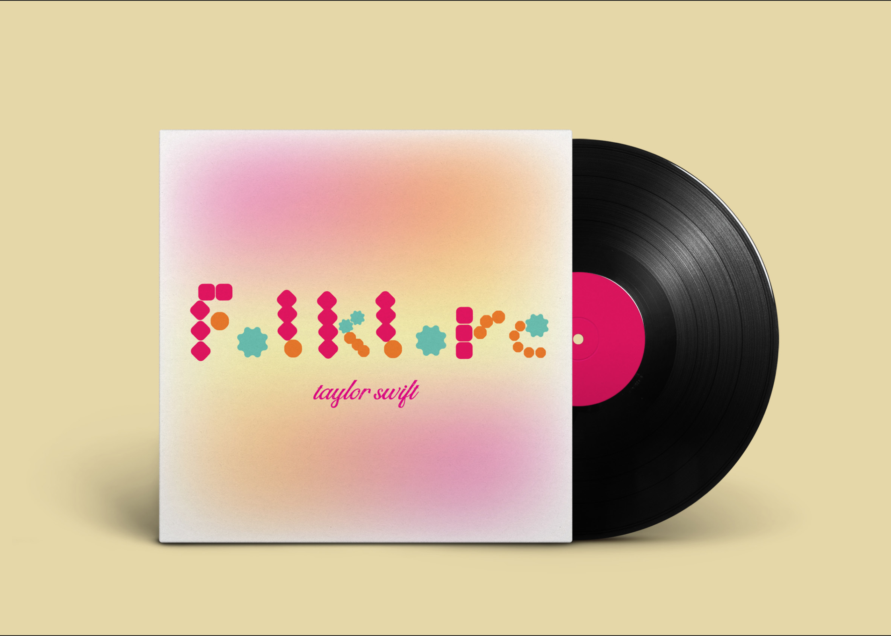
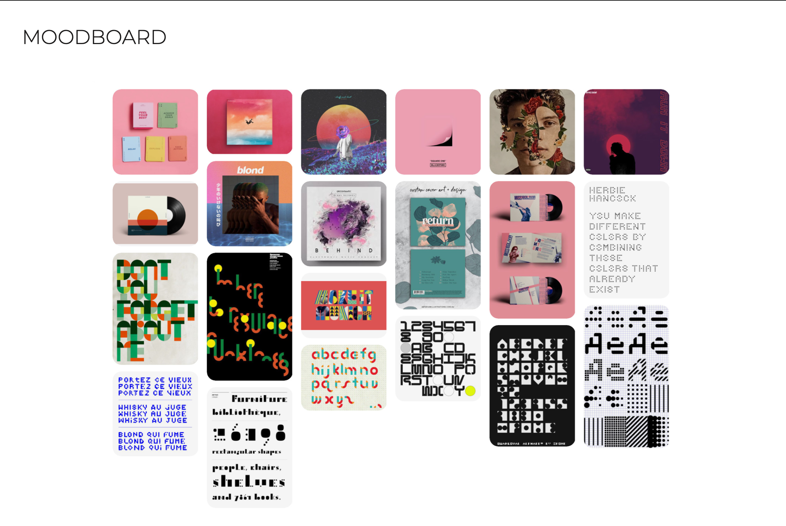
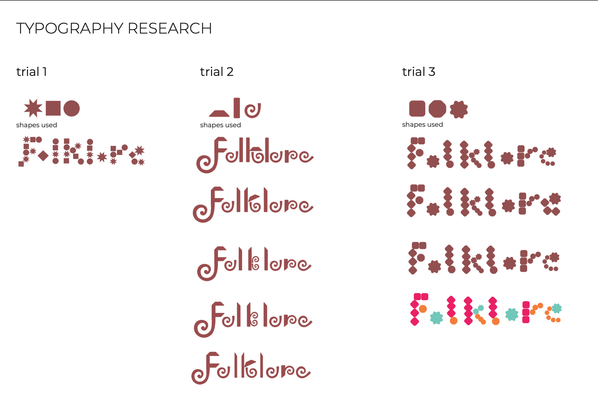
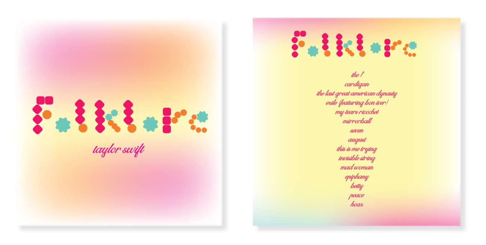

Folklore
Creation of a modular typeface for Taylor Swift's album "Folklore"; an alternate proposal celebrating the variety of emotions through colours.




Creation of a modular typeface for Taylor Swift's album "Folklore"; an alternate proposal celebrating the variety of emotions through colours.